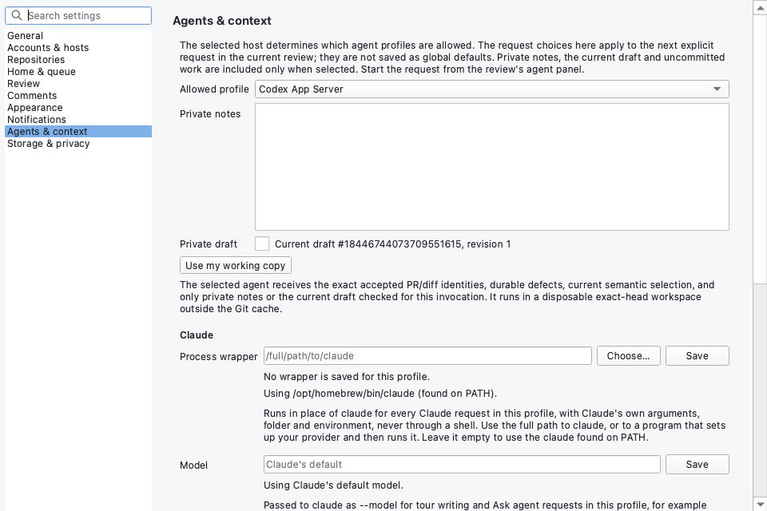

Setting up an agent the first time
Light / DarkDesign round v1 for BPR-PENDING-AN and RFC-DRAFT-0026. The owner, 2026-10-22: “I think we need some ux for setting up your agent the first time you go to the agent tab. Maybe a little wizard I'm not sure.” The first two pictures are the real application, rendered offscreen from b69b82c9b on the conventional-comments fixture. The rest are mockups on BPR-1574's accepted drawer kit; paths and versions in them are examples.
Today
The Agent tab opens straight into a conversation. Its agent list is the four built-in profiles by their protocol names, with Codex App Server chosen first whatever is installed. Nothing is looked for until you press Ask. On this Mac the first Ask ended Finished: failed_to_start: a shipped build passes the bare name codex to a launcher that starts only absolute paths, so Codex cannot start from the shipped profiles on any platform. Claude is searched for, but only Settings › Agents & context says where it was found.



claude would run. The profile chosen here applies to the next request only.The owner's own first run (2026-10-22, from a photograph, not reproduced here) chose External terminal harness for a Claude Code wrapper, scope Selected lines, head fba81b4. It ended “External terminal harness stopped before answering. Finished: workspace_unavailable. Your question is kept.” and Show the log gave Git's words: “error: Could not read 984772c… fatal: Failed to traverse parents of commit fba81b4…”. The private review copy could not be made from the cache, so no agent ran at all; the cause is being fixed separately. The words blamed the harness, the reason was a code and a raw log, and the only actions were Ask again and the log. External terminal harness is the plain-text fallback for a tool with no Claude or Codex interface; a Claude wrapper belongs under Settings › Claude › Process wrapper, and nothing in the menu says so.
What a first-time user has to do now
| Step | Where | Today | The app could |
|---|---|---|---|
| Install Claude Code or Codex | Outside the app | Not mentioned | Detect on PATH and the usual folders, and explain with install links |
Sign in to it: claude auth login or codex login | Terminal | Not mentioned; learned from a failure | Detect with the agent's status command; explain and copy the command. Never take the credential. |
| Open a pull request in Review | App | Needed: the tab exists only there | Nothing to change |
| Pick the agent from four protocol names | Agent tab or Settings | Codex App Server is preselected | Do: preselect what was found, by its plain name, and remember it |
| Claude through Bedrock or a gateway: set a process wrapper | Settings | Works | Explain: “Use another program…” leads there |
| Codex: make it start at all | Not possible in a shipped build | Always failed_to_start | Do: search for codex as for claude |
| Get a private copy of the pull request made | Automatic, at Ask | Fails as workspace_unavailable with a raw Git log | Detect in setup's check; explain in words; do Get the pull request again, or Use my working copy |
| Know what “External terminal harness” is | Agent menu | Unexplained; read as “my wrapper” | Explain it in Settings and take it off the menu (Q4) |
| Register the MCP helper | Nothing | Not a user step: the app owns the helper, and no agent is configured with it today | Nothing to say |
Use bpr cycle or bpr tour from the agent | Build from source; MASK skills | bpr is in no release package | Out of this card (Q6) |
The proposal: set up in the tab
The first time the Agent tab opens and no agent has been chosen for this profile, the tab is a short setup instead of a conversation. It looks for the agents (reading file metadata only, running nothing), shows what it found with the path, and offers one check of the two things a first question needs: the agent answers, and the private copy of this pull request can be made. Each has its own result in words and a recovery action. When both pass, the steps fold into one green line and the question field takes the keyboard. The choice is saved for the profile, so the setup does not come back. It can be run again from History or Settings, and it returns by itself when the saved agent is gone. A later Ask that fails for a setup reason goes back to that check instead of offering only Ask again.


The alternatives


The questions
Q1. Shape
A: set up inside the Agent tab (recommended). B: an empty state with next steps. C: a wizard sheet.
Q2. Look for agents when the tab first opens
Accept or Reject. Amends “Merely showing the panel performs no executable discovery” (AI agent boundary). Reading metadata only; nothing runs.
Q3. How the check proves it works
A: the agent's own status command (recommended). B: one short request with no code. C: no check; the first real answer is the check.
Q4. Plain agent names
Accept or Reject. The menu says Claude Code and Codex. The Codex protocol choice moves to Settings, and the external terminal harness leaves the menu for Settings as “a harness that reads plain text”, explained there.
Q5. Find codex the way claude is found
Accept or Reject. PATH, then the usual install folders, with a Codex program path in Settings like Claude's wrapper; the plain-text harness runs only a path you choose. Without it neither starts in a shipped build.
Q6. Leave “use BetterPullReview from your agent” out
Accept or Reject. bpr cycle, bpr tour and their skills get their own card, because bpr is in no release package yet.